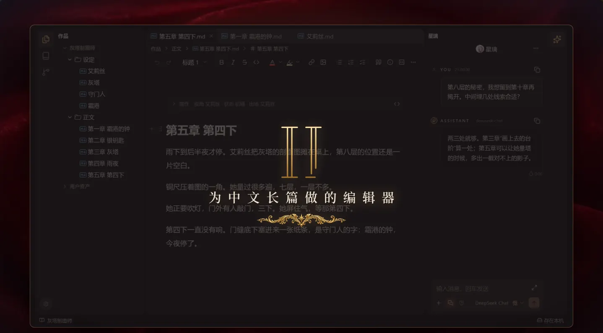
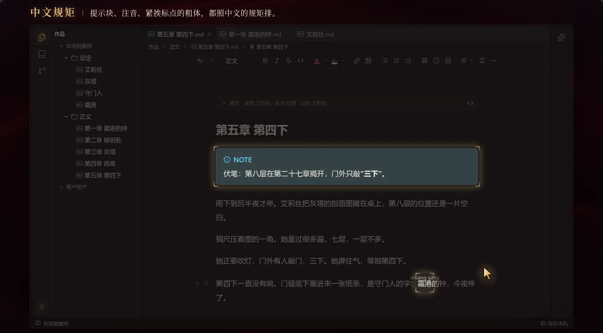
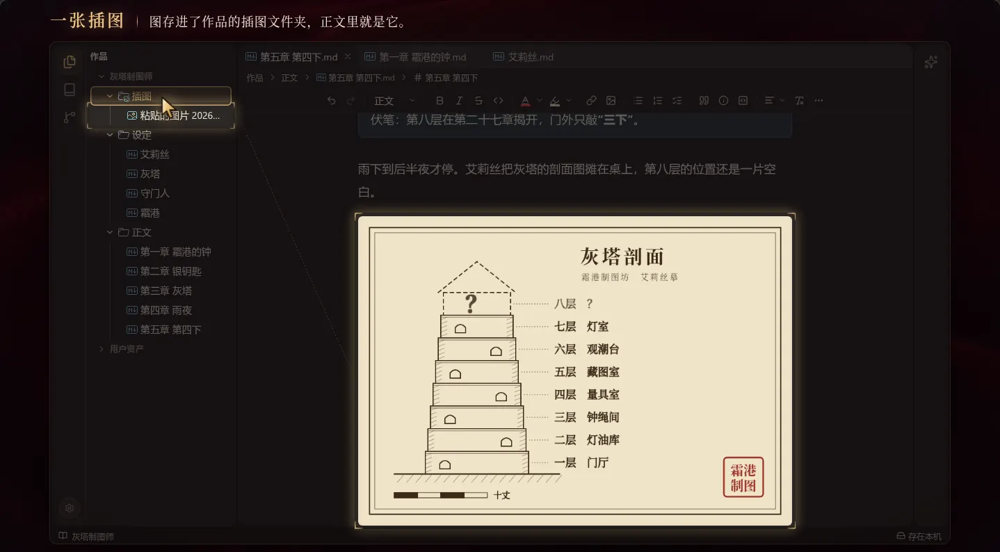
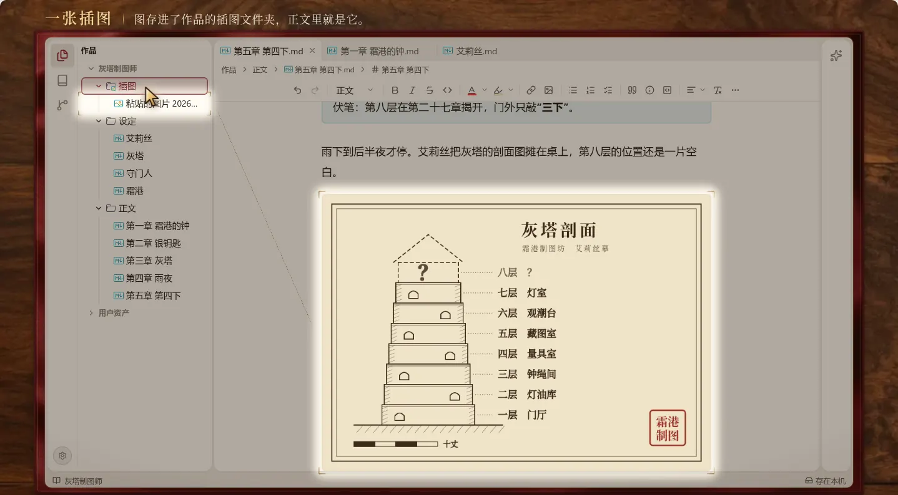
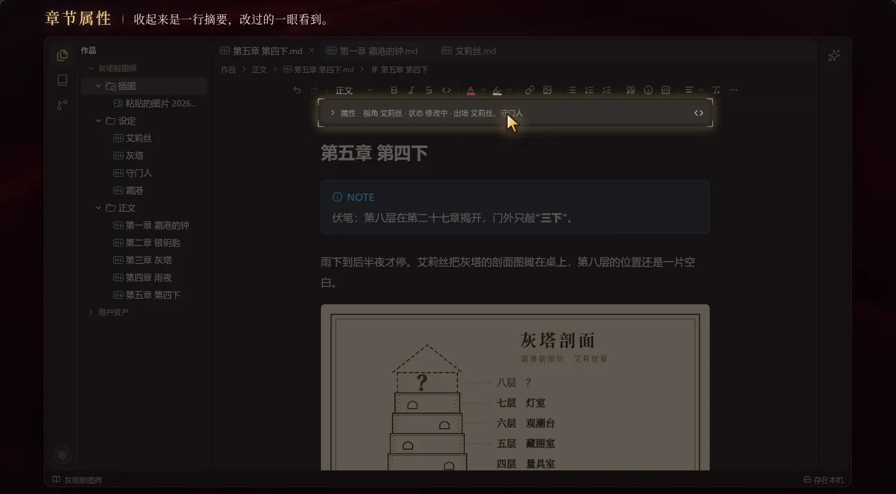
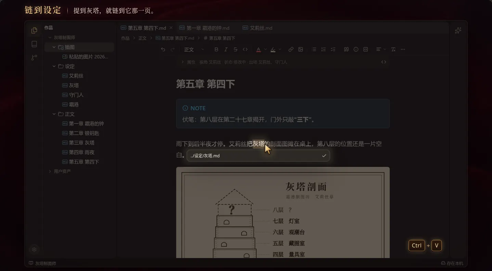
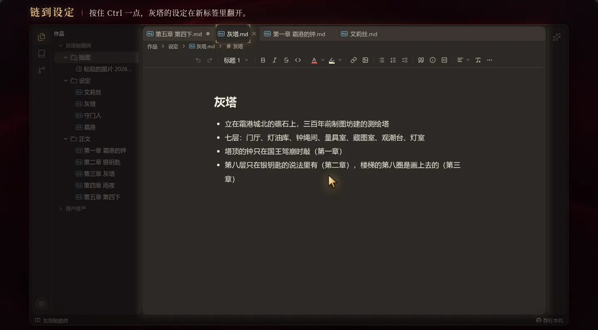
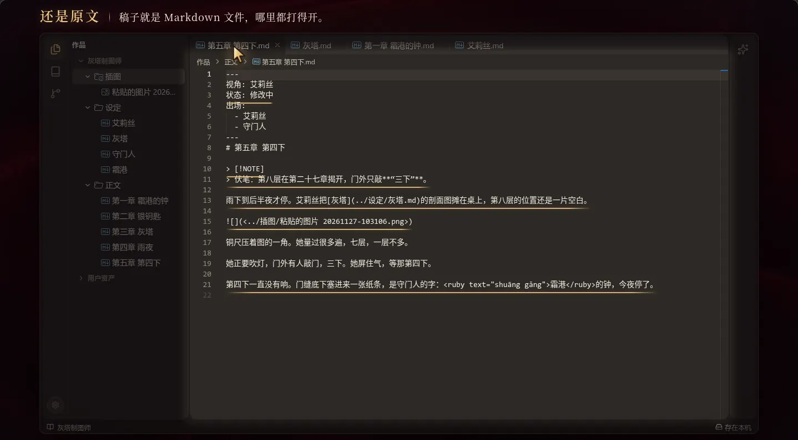

产品介绍首页：入殿·俯案成界（第 13 轮）
照第 12 轮的回答：白天的墙换成生成的藏书阁；第二幕（编辑器）照脚本做了原型，开场落印，五拍都在复原的工作台上真的演。
白天首屏换成藏书阁，这样可以吗？
推荐：这样可以。书架往里退的纵深与焦外书脊的金光撑起了华丽感，标题压在暗处读得清。
- 照 @designer 第 12 轮的方案 B 生成一张（1 次，没有重发）：正中一条长廊往里退，远处一道暗木拱龛，视平线压在六成高，对齐案面的远边。
- 标题那一块压暗，下半截沉到深木色；往下滚俯冲时，案面远边后面不露出地板的反光。第 12 轮的虚焦胡桃木删掉了。
第二幕这样演，可以吗？
推荐：这样可以。五拍都是产品真有的功能，走产品自己的入口（斜杠菜单、选区菜单、链接卡片、属性面板、粘贴、换编辑器），结论画面照脚本标了出来；和脚本不一样的几处是产品本身没有的，列在最后。快捷键在编辑区右下角亮一下金边键帽。
开场：沉幕落印

从第一幕往下滚过分界时放，约 1.6 秒：薄暮，金线描出 II，再收进眉题，同时右边星璃那一栏收起、正文展宽。往回滚只压一下薄暮，回到第一幕离开时的样子。两幕各自记着演到哪，回来接着演。
1 中文规矩

行首打顿号叫出斜杠菜单，打 tsk 筛到“提示块”；块里带引号的“三下”按 Ctrl+B 加粗、紧挨着句号；再给“霜港”注音。菜单开着时照亮这一段与菜单，结论时四角框住提示块与注音词。
2 一张插图


按 Ctrl+V，正文里闪过“正在上传 1 张图片”，长成整张版画；作品树里多了“插图”，点开就是这张图，与正文里的图之间一道细金线。左：夜。右：白天。
3 章节属性

展开属性，状态改成“修改中”，出场添上“守门人”，收起。四角跟着面板展开、收起，最后框在这一行摘要上。
4 链到设定


选中“灰塔”，Ctrl+K 叫出链接卡片，地址贴进去、回车。按住 Ctrl 点链接，灰塔那一页在新标签里翻开，亮处扩到新标签连同那一页，停一会儿点回第五章。
5 还是原文

换成源码编辑器打开同一章，属性、提示块、链接、插图、注音那几行自上而下依次描金，齐亮一会儿。交给你时切回富文本，光标停在第五章末尾，眉题是“轮到你写”。
和脚本不一样的几处
- 提示块的标题行写着 NOTE：产品新建的提示块没有标题，富文本里也改不了，显示的是类型名。
- 链接的地址是贴进卡片的，不是“已经填好”：产品的链接卡片新建时是空的，也不按名字搜作品里的文件（Spec 里写明这一版不做）。贴进去一次到位，不演逐字敲路径。
- 版画是横版：竖版缩到正文一栏宽有 800 多像素高，一屏看不全。
- 第五拍没演怎么换编辑器，见下一题。
- 访客要求少动效时每一拍直接摆到结论，停 3.2 秒；窄屏不演，只换字幕（同第一幕）。
第五拍要不要演出“换编辑器”的入口？
推荐：照产品现在的入口演。换编辑器的入口藏在“⋯”里，演一遍比字幕更能让人记住；复原的工作台本来就该有标签条右侧那两个按钮。
- 脚本写的是“右键标签，用源码编辑器重新打开”，产品的标签右键菜单里没有这一项。现在的入口是标签条右侧的“⋯”（旁边还有一个“向右拆分”按钮），点“用其它编辑器重新打开”，再在快速选择里挑“源码编辑器”。
- 复原的工作台没接这两样，所以这一版直接换。照入口演的话，两幕的标签条右侧都会多出这两个按钮，这一拍长约 3 秒。
- VS Code 的标签右键菜单里有这一项；要照脚本演右键，得先在产品里加上，是另一件事。
已定
- 首页给搜索进来的人，做得像产品介绍；书庭这类页面另做、自由发挥（2026-11-26）
- 截图尽量少：直接把工作台复原，让人体验到拖动、分屏与布局动画的丝滑（第 1 轮）
- 第一屏把介绍说明白，同时要有高级精美的动画，让人想往下滚；往下滚进入滚动动画（第 1 轮）
- 基调取 w00050 t06 契约仪式页的史诗、神圣、西幻气氛，不复制；现有的 NovelAI 场景图不直接用（2026-11-26）
- 要讲的功能：写作与编辑器、世界引擎、剧情（在做）、星璃与 Agent、本地与开源、插件与 SDK、桌面版、模型自选；llmlint 不列（2026-11-26）
- 先做方向一《入殿·俯案成界》；材质可以用生成的贴图，首页可以用星璃的立绘与贴纸（2026-11-26）
- 首屏方向不变、先打磨材质；按钮加金边一类的装饰，往皇室奢华感走；工作台缺省夜间配色、可以切换（第 4 轮）
- 第一幕放慢讲清楚，加回浮窗、视图换位置、关掉再打开，和首屏一样华丽（第 4 轮与会话）
- 首句用 e3“每一个世界，都从一行字开始。”，配 From words to world.（第 4 轮与会话）
- 演示的拖动用实时布局；访客动过要有恢复动画；顺手介绍编辑器的标注与高亮；整个页面要有白天；首屏静中有动、纸条可以轮播；按钮出几版（第 5 轮之后的会话）
- 第一幕不用访客滚动：落地以后自动连播，访客愿意就停着看；拖动不要上下左右中的落点分区；首屏的动静要快一些、大一些、更高级（第 6 轮之后的会话）
- 第一幕这样连播可以；章节条用古籍标尺；首屏“从字到世界”与指针响应都要，旁边的东西要能点、点了稍放大，要有跟鼠标位置、速度互动的动画；按钮用皮面烫金；白天要再改；虚拟指针压到菜单之上、拖动快些走弧线、字幕换显眼的地方、重点加遮罩（第 7 轮）
- 字幕放在工作台正上方；重点用遮罩，但高亮要做得好看；首屏能点能动手的几处可以，指针效果要更明显、更好看，考虑多加点元素；白天的桌面换成生成的旧橡木（第 8 轮）
- 高亮用鎏金标记；首屏的提灯与金丝可以；星盘与线索丝都留，但要有看得见的动画与交互；白天要更华丽，不能只有一张桌、其余灰蒙蒙（第 9 轮）
- 星盘与线索丝这样可以；白天的桌面换生成的深胡桃木，工作台的投影与四周要处理（可以垫一块红丝绸）；首屏滚动变卡要查（第 10 轮）
- 首屏滚动顺了；丝绸换成生成的缎面照片；白天首屏的上半截不要一片米黄；第一幕的拖动放慢一些、演示时指针一直显示；第二幕要有开场动画（第 11 轮）
- 白天的墙换成生成的藏书阁；第一幕拖动的快慢与一直显示的指针可以；第二幕照板上的脚本做原型（第 12 轮）